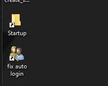
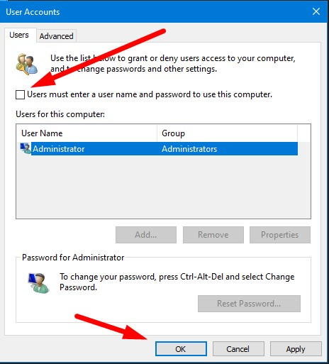

pertama silahkan download dulu file berikut. caranya klik kanan auto-start lalu "save link as"
Download Auto_Startfungsi Auto-Start adalah untuk membuat Shortcut "Startup" dan juga "Fix Auto Login" . lalu jalankan file tersebut, lalu anda akan mendapati 2 shortcut ini di desktop
- taruh Shortcut Meta Trader anda ke folder Startup
- itu . jalankan fix auto Login, hilangkan centang "User must enter..." lalu OK
Note: apabila anda mengganti password VPS, anda harus menjalankan fix auto login lagi. centang lalu apply. lalu hilangkan lagi centangnya lalu OK untuk me refresh fix auto loginnya
Copyright Digitalku